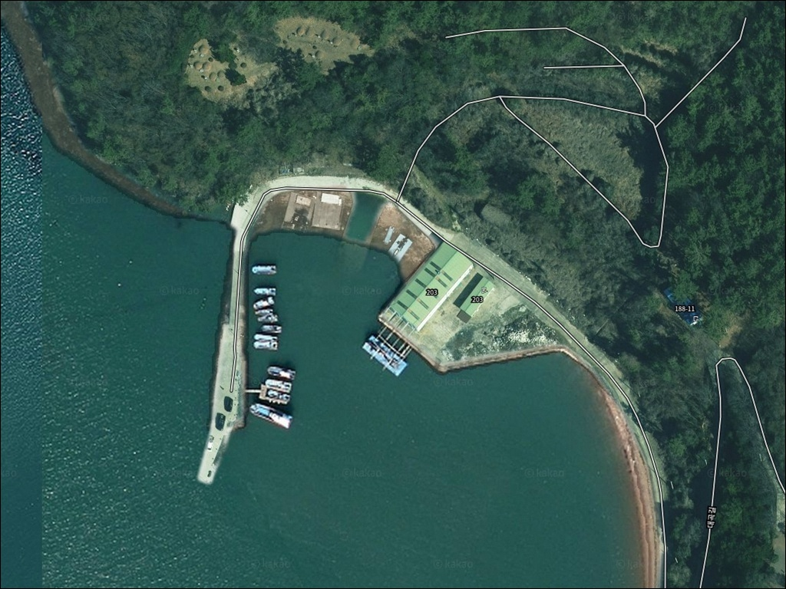
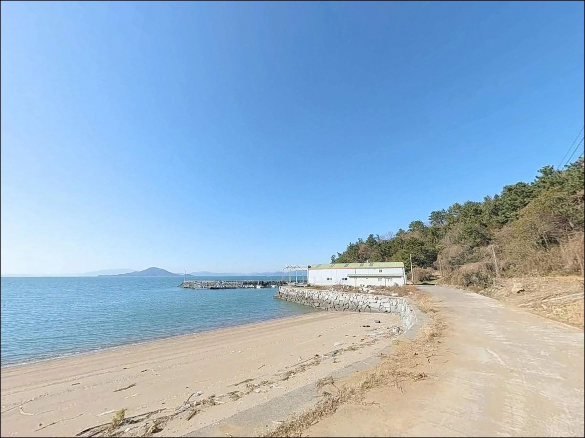
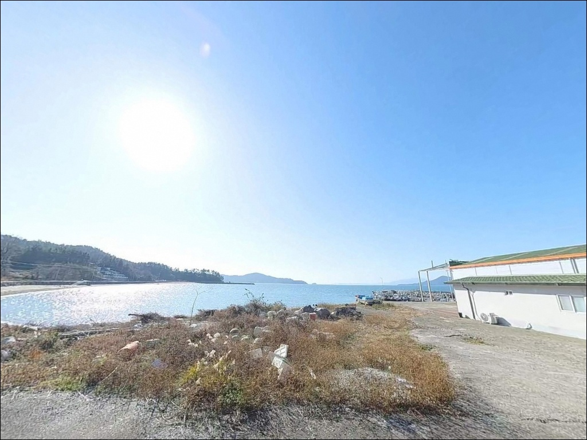
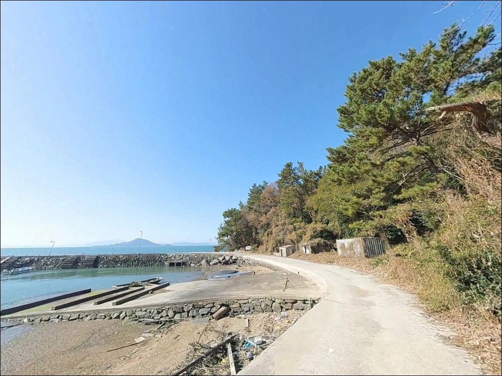
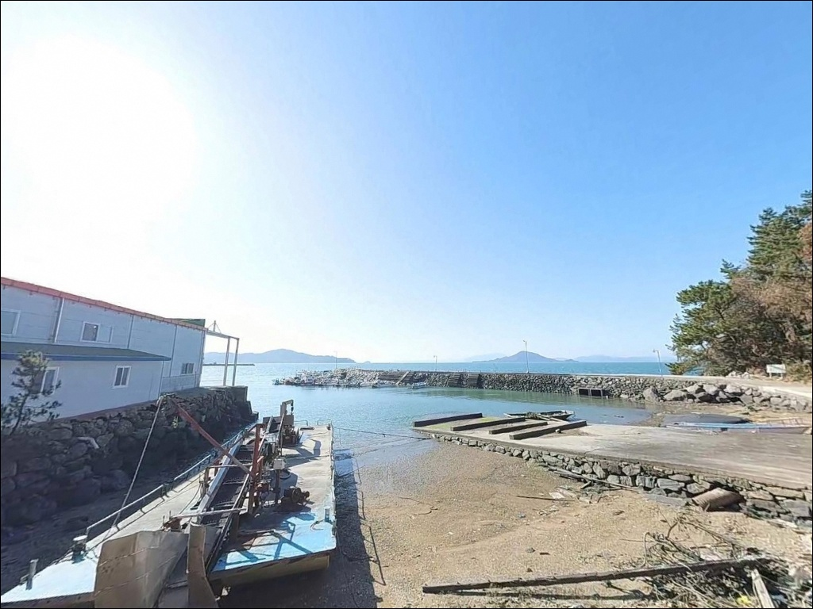
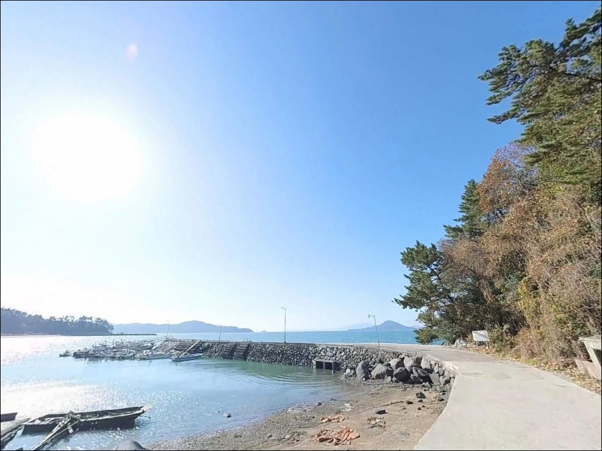
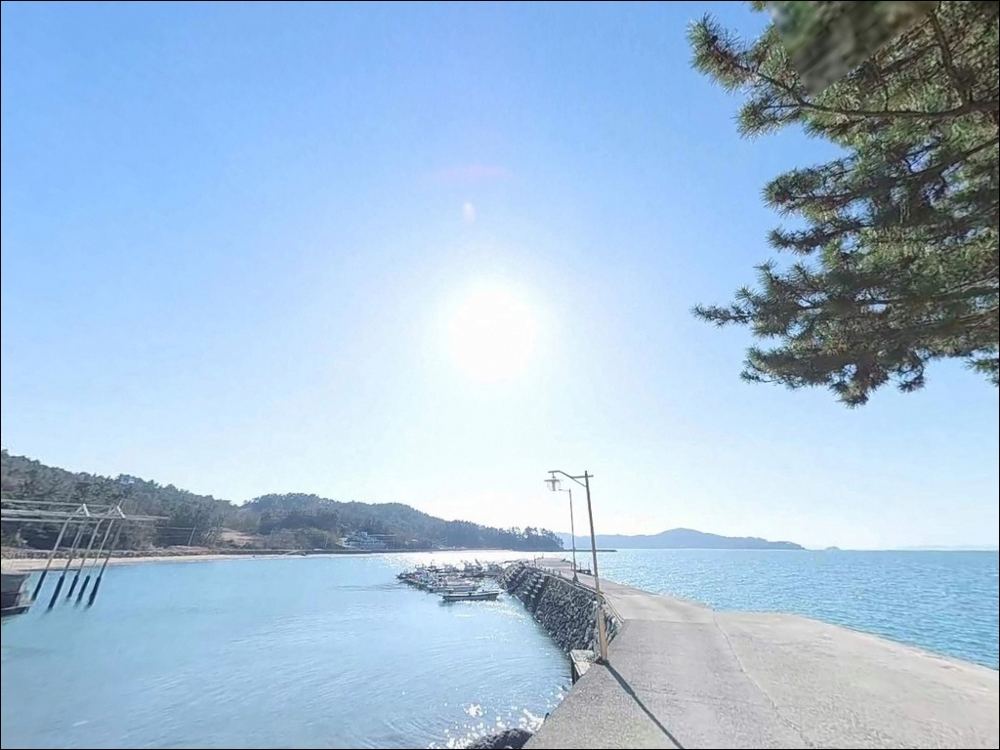
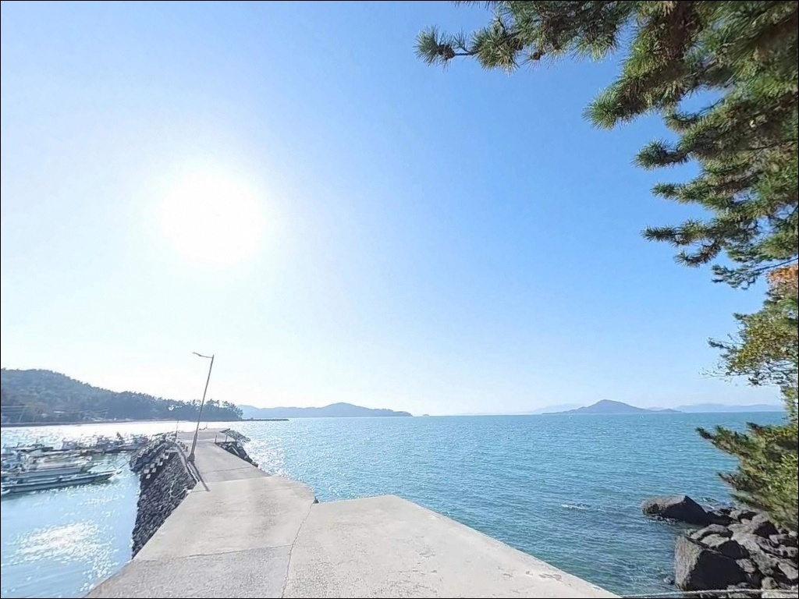
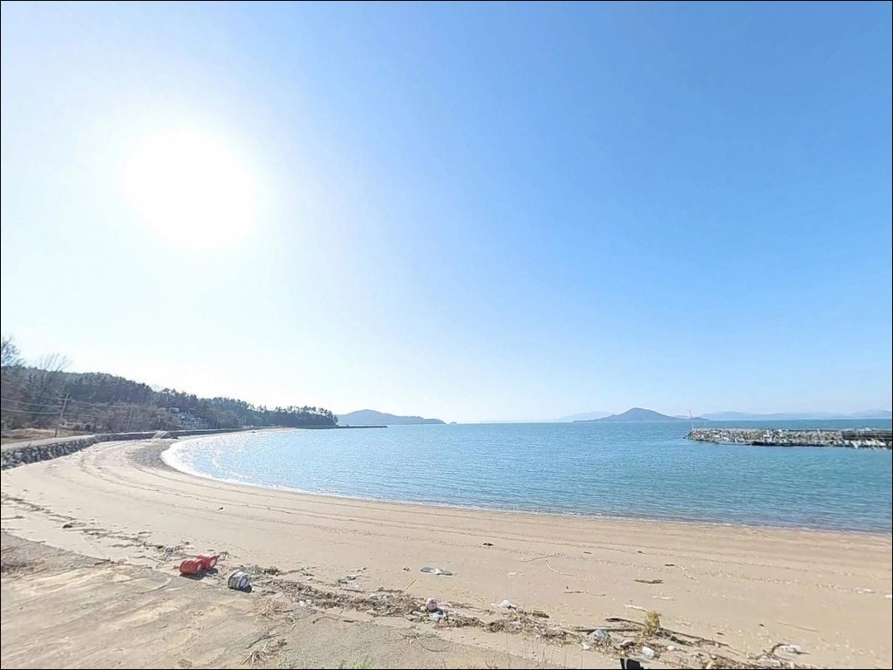

고흥 가야리방파제 간조에 수심 빠지면 원투낚시 채비 걷어야 합니다
이 페이지에는 광고(제휴 링크 포함)가 있으며, 광고 링크를 통해 구매하면 운영자가 판매 수익 또는 수수료를 받을 수 있습니다. 포인트 사진: 카카오맵 스카이뷰·로드뷰. 이 페이지의 지도·사진 이미지는 카카오맵의 실제 서비스 이미지와 다를 수 있습니다.


포인트 안내
가야리방파제
전남 고흥군 도덕면 가야리 364-11
득량만 내만에 자리한 방파제는
물때를 무시하고 찾아가면
바닥이 드러난 갯벌 앞에
채비만 던지다 돌아오는 결과로 이어집니다.
이 포인트는 간조 시 수심이 1m 미만으로 낮아지는 구조로,
만조 전후 타이밍 판단이 낚시 가능 여부를 결정합니다.
전남 고흥군 도덕면 가야리에 위치한
이 방파제는 당중항으로 등록된
소형 마을 선착장 겸 방파제입니다.
외해 파도의 직접 영향을 받지 않는 내만 구조라
잔잔한 수면 환경을 갖추고 있으며,
원투·루어·찌낚시를 모두 시도할 수 있는
남해안 전형의 만 단위 포인트입니다.
이 글은 가야리방파제의
진입 환경, 물때 기반 낚시 조건,
낚시 스타일별 공략 방향, 차박 여건에 집중합니다.
조황 단정이나 특정 어종 보장은
이 글의 범위에 포함되지 않습니다.

1. 진입 동선과 포인트 접근성
가야리방파제 진입은 도덕면 내
마을 도로를 타고 해안 쪽으로 내려오는 구조입니다.
간선도로에서 가야리 마을을 경유하는 구간은
1.5~2차선 폭의 콘크리트 포장로로 이어지며,
방파제 직전까지 차량이 닿는 동선이 짧아
짐을 풀고 바로 진입하는 방식이 가능합니다.
대형 캠핑카나 캐러밴은 마을 도로 진입 자체가 어렵습니다.
승용차나 SUV 기준으로는 방파제 입구까지
진입이 가능하며, 교행이 필요한 구간에서는
속도를 줄이고 서행하는 것이 기본입니다.
회차는 방파제 입구 공터 또는
선착장 공간을 활용하는 방식이고,
대형 차량은 마을 입구에서 회차를 권장합니다.
주차는 방파제 입구 콘크리트 포장 공간을
기본으로 활용합니다.
소형차 기준 3~5대 수용 가능한 수준의 공터가
방파제 진입부에 형성되어 있습니다.
어선 입출항 동선을 막지 않는 자리가 우선이며,
방파제 상판은 폭이 좁아 차량 진입은
현장 상황을 보고 판단하는 편이 안전합니다.

2. 차박 환경과 야간 체류 여건
가야리방파제 인근은 민가 밀집도가 낮은
소형 어촌 마을 구조입니다.
야간 차량 통행이 거의 없어
차 안에서 조용히 머무는 환경으로는
나쁘지 않은 편입니다.
다만 방파제와 선착장 주변으로
민가가 해안선 가까이 붙어 있어
야간 소음과 차량 조명에 각별히 신경을 써야 합니다.
가로등은 마을 입구 구간에 일부 배치되어 있으며,
방파제 끝단까지는 조명이 닿지 않습니다.
야간 낚시를 겸한 차박이라면
개인 헤드랜턴과 랜턴은 필수입니다.
내만 구조라 파도와 바람 영향이 제한적이어서
차박 수면 환경 자체는 비교적 안정적인 편입니다.
주차 공간이 방파제 입구 공터 위주로
제한적이라 여러 팀이 동시에 머물기에는
공간 여건이 충분하지 않습니다.
차박을 메인 목적으로 계획한다면
현장 공간 여건을 먼저 확인하고
여의치 않으면 대안 지점으로 이동하는
플랜B를 미리 잡아두는 편이 좋습니다.


3. 주변 편의시설 및 인프라 현황
가야리방파제 반경 1km 이내에는
편의점이나 식당을 기대하기 어렵습니다.
소형 어촌 마을 구조이므로
식수·음식·낚시 소품·연료는
출발 전에 모두 갖춰 진입하는 것이 현실적입니다.
도덕면 소재지인 용동리 방향으로
차량으로 5~7분 이동하면
면 단위 생활권 시설을 이용할 수 있습니다.
소규모 마트와 식당, 보건지소가 자리하고 있어
부족한 물품이 생겼을 때는
이 동선을 활용하면 됩니다.
응급 상황 발생 시에는
도양읍 녹동 방면의
의료·약국 시설까지 이동이 필요합니다.
비상약품과 충분한 수분을
출발 전에 준비해 두는 것이 기본입니다.

4. 방문 전 반드시 챙겨야 할 준비사항
가야리방파제 방문에서 가장 먼저 확인할 것은
물때입니다.
득량만 내측에 위치한 내만 지형은
조수간만의 차가 크고 간조 시
방파제 주변 수역이 1m 미만으로 낮아지는 구간이 생깁니다.
바다타임에서 도덕면 기준 물때를 확인하고,
만조 전후 2~3시간을 중심으로
출발 시각을 맞추는 것이 기본 전략입니다.
내만 구조라 외해 파도 영향은 제한적이지만
기상에 따라 바람 방향이 바뀌는 경우가 있습니다.
출조 당일 아침 기상청 해상 예보를
한 번 더 확인하는 것이 포인트 낭비를 막는 조건입니다.
내만 바닥 지형 특성상 채비 손실이 있을 수 있으니
여분 채비는 넉넉하게 준비하는 편이 좋습니다.
마을 선착장 구조라 어선 조업 동선이 있습니다.
어구와 통발이 놓인 자리를 피해
채비를 투척하고,
어선 입출항 시 낚싯대를 거두어
충돌을 방지하는 것이 기본 매너입니다.
야간에는 구명조끼와 헤드랜턴을 반드시 착용합니다.

5. 물때에 따라 낚시 여건이 달라지는 포인트
가야리방파제의 지형 핵심은
득량만 내측 내만 구조에 있습니다.
외해 파도가 직접 들어오지 않는 대신
조석 흐름에 연동된 조류가 만 내부를 순환하며,
만조와 간조 간 수위차가 상당합니다.
방파제 끝단 기준 만조 시 수심은
3~5m 수준으로 확보되며,
이 타이밍이 낚시 포인트 활용의 핵심입니다.
방파제 외항 쪽은 득량만 내측 수역을 향하며
방파제 끝단 콧부리 외측과 수로 진입부에서
수심이 한 번 꺾이는 구간이 형성됩니다.
내항 쪽은 어선 계류 위주 구조로
낚시 공간이 제한되는 편이며,
외항 쪽이 조류 흐름을 받아
원투와 루어 공략에 더 유리한 구간입니다.
도덕면 일대 바닥 지형은
모래와 갯벌이 혼합된 연안 구조입니다.
방파제 인접 갯바위 구간도 연결되어 있어
낚시 자리 선택의 폭이 있는 편이고,
도보로 갯바위에 접근해
다른 각도로 공략하는 방식도 가능합니다.
출조 전에 고흥 도덕면 일대 최신 조황을
반드시 검색해 보시기 바랍니다.


6. 포인트에 어울리는 낚시 스타일
이 포인트에서 가장 기본이 되는 낚시는
원투낚시입니다.
외항 방향으로 원투 시 수심이 확보되는
만조 타이밍이 핵심이며,
도덕면 일대 바닥이 모래와 갯벌 혼합 구조라
붕장어와 도다리 계열을 기대해 볼 수 있는
조건이 갖춰진 해역입니다.
루어 낚시도 이 포인트 구조에 맞는 방식입니다.
방파제 끝단과 수로 경계부에서
고흥 도덕면 일대 해역 특성상
갑오징어와 문어를 노릴 수 있습니다.
고흥반도 전 해안이 두족류 서식 밀도가 높은 해역으로,
루어와 에깅 채비를 함께 준비하는 방식이
이 일대 방파제 운용에 효율적입니다.
찌낚시도 만조 전후 내항 및 외항 전반에서
가능한 방식입니다.
수심이 얕은 구조이므로 찌 수심 조절이 관건이며,
조류가 한 방향으로 흐르는 타이밍에
채비 운영이 비교적 수월해집니다.
이 해역에서는 감성돔과 볼락, 숭어를
찌낚시 대상으로 기대해 볼 수 있습니다.

7. 대안 포인트와 플랜 B 동선
가야리방파제 조류가 여의치 않거나
주차 공간이 꽉 찬 경우,
같은 도덕면 내 오마리방파제가
첫 번째 대안입니다.
가야리에서 남쪽으로 약 7km 거리이며,
낚시춘추 등 공식 매체에 포인트 정보가
수록된 검증된 곳으로
외항 낚시 공간이 넓고 진입 여건도 안정적입니다.
같은 만 북쪽의
용동해수욕장 방파제도 대안입니다.
주차 여건이 비교적 우수하고
방파제 구조가 길어 자리 선택의 폭이 넓습니다.
가야리방파제에서 이동 거리가 짧아
가야리 → 용동 순서의 이동 동선이
이 구간 탐색에 효율적입니다.
차박 여건이 부족하다면
도덕면 내 고흥만 수변노을공원 인근이
대체 후보입니다.
공원 주차 공간이 넓고
낚시와 차박을 병행할 수 있는 여건이
갖춰진 것으로 확인됩니다.

물때를 이해하면
가야리방파제가 달라 보입니다
원투낚시나 루어 낚시를 즐기는 낚시인이라면
가야리방파제의 내만 지형 구조는
잘 맞는 환경입니다.
붕장어·도다리·갑오징어·문어까지
기대해 볼 수 있는 득량만 해역에 자리하며,
아직 많이 알려지지 않은
조용한 탐방형 포인트이기도 합니다.
반면 물때 확인 없이 진입하거나
간조 전후에 도착하면
낚시 자체가 어려운 상황이 됩니다.
편의시설 없는 완전 자급 진입,
좁은 마을 도로 확인,
물때 기반 출발 시각 계획,
이 세 가지를 갖추고 간다면
고흥 도덕면 해안선의 조용한 한 자리를
온전히 즐길 수 있는 포인트입니다.
잔잔한 내만 수면 옆에서
만조를 기다리며 채비를 풀고
하룻밤 머무는 차박 낚시 여행자라면,
마을 어민들의 생활 동선을 존중하며
고요한 득량만의 밤을 즐길 수 있는 곳입니다.